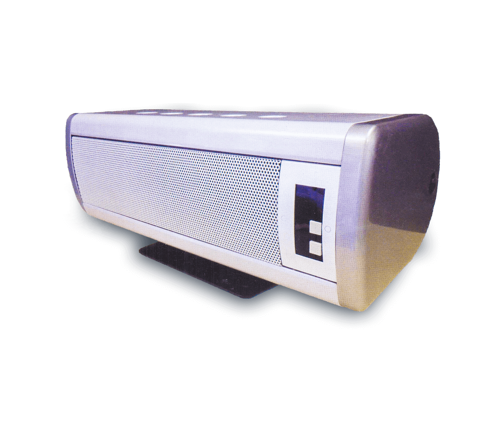
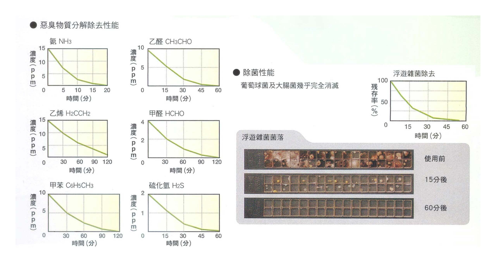
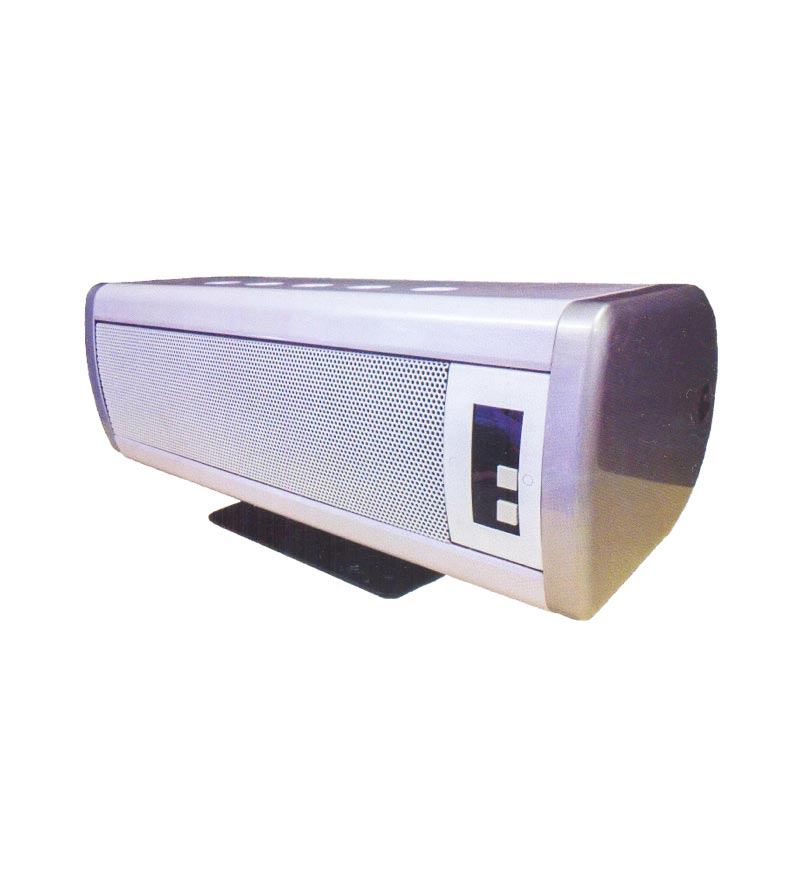
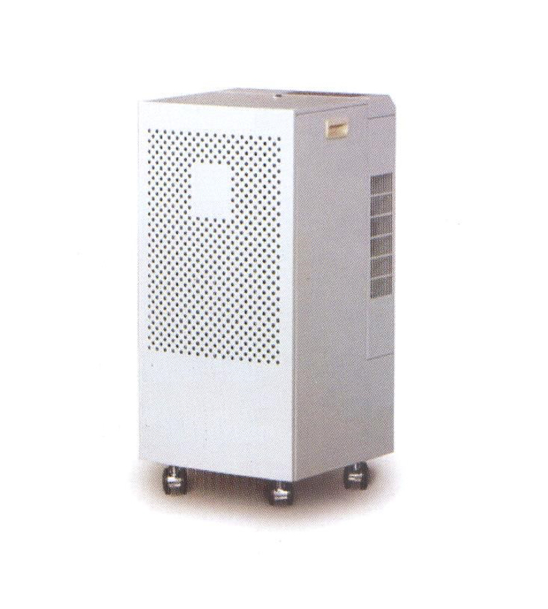
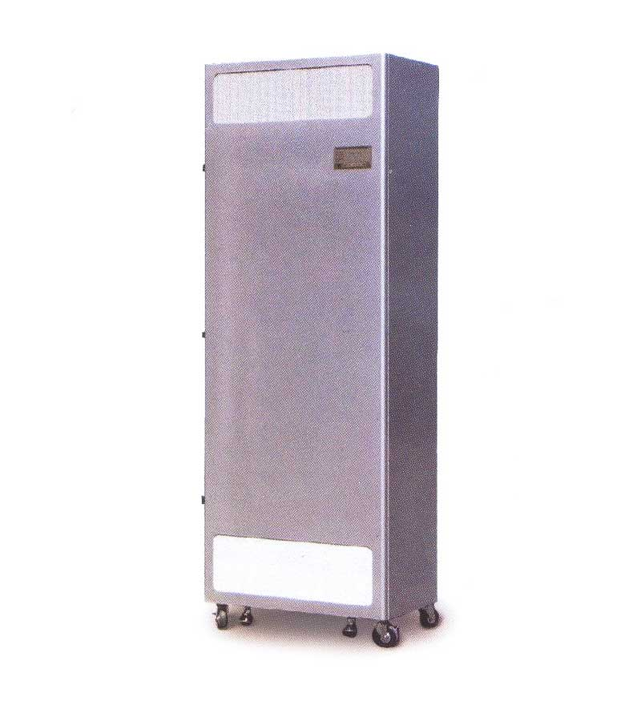

奈米光觸媒空氣清淨機
Titanic Ceramic Deodorizer
- 日本獨步光觸媒
- 除塵、脫臭、殺菌、消毒合一

特點
- 超微奈米級光觸媒粒子，除臭效率優異
- 光觸媒粒子均勻燒結於陶瓷濾板，形成永久性構造
- 三次元多孔陶瓷濾板，具有最大的除臭接觸容量
- UV光照度經過妥善設計，完全發揮除臭殺菌活性
適用場所
- 一般場所
家庭、辦公室、會議室、餐廳、廚房、醫院、藥局、化驗室、養老院、動物院、保鮮室 等等需要除臭、殺菌、保鮮的場所
- 工業場所
電子廠、化學廠、印製廠、塗料廠、食品廠、飼料廠、回收廠 等等各種臭味及VOC發生的場所

Model List
機型一覽
- 
- SSC-10i型
適用面積3~10坪
- 
- SPP-20i型
適用面積5~25坪
- 
- SSC-50E型
適用面積8~30坪
規格表
| 型式 | 適用面積 | 本體尺寸W*H*D(mm) | 重量(kg) | UV-A燈(W) | 陶瓷光觸媒濾板 | 附加濾材 | 最大處理風量及噪音 | 消耗電力 | 其他 |
|---|---|---|---|---|---|---|---|---|---|
| 型式 | SSC-10i | ||||||||
| 適用面積 | 3~10坪 | ||||||||
| 本體尺寸W*H*D(mm) | 430*185*140 | ||||||||
| 重量(kg) | 4.5 | ||||||||
| UV-A燈(W) | 20 | ||||||||
| 陶瓷光觸媒濾板 | 2段 | ||||||||
| 附加濾材 | 預濾材 | ||||||||
| 最大處理風量及噪音 | 1.2CMM@35dB | ||||||||
| 消耗電力 | 65W、1A | ||||||||
| 其他 | 台面、壁掛兩用 | ||||||||
| 型式 | SSC-20i | ||||||||
| 適用面積 | 5~20坪 | ||||||||
| 本體尺寸W*H*D(mm) | 400*676*218 | ||||||||
| 重量(kg) | 28 | ||||||||
| UV-A燈(W) | 100 | ||||||||
| 陶瓷光觸媒濾板 | 5段 | ||||||||
| 附加濾材 | 預濾材、後濾材 | ||||||||
| 最大處理風量及噪音 | 3CMM@44dB | ||||||||
| 消耗電力 | 170W、3A | ||||||||
| 其他 | _ | ||||||||
| 型式 | CET-20i | ||||||||
| 適用面積 | 10~30坪 | ||||||||
| 本體尺寸W*H*D(mm) | 802*330*1144.5 | ||||||||
| 重量(kg) | 70 | ||||||||
| UV-A燈(W) | 300 | ||||||||
| 陶瓷光觸媒濾板 | 2段 | ||||||||
| 附加濾材 | 預濾材、HEPA高效濾材 | ||||||||
| 最大處理風量及噪音 | 15CMM@54dB | ||||||||
| 消耗電力 | 8A | ||||||||
| 其他 | _ | ||||||||
| 型式 | SSC-50EHO | ||||||||
| 適用面積 | 8~30坪 | ||||||||
| 本體尺寸W*H*D(mm) | 580*1142.5*380 | ||||||||
| 重量(kg) | 80 | ||||||||
| UV-A燈(W) | 300 | ||||||||
| 陶瓷光觸媒濾板 | 5段 | ||||||||
| 附加濾材 | 預濾材、後濾材 | ||||||||
| 最大處理風量及噪音 | 9CMM@58dB | ||||||||
| 消耗電力 | 510W、6A | ||||||||
| 其他 | _ | ||||||||
| 型式 | SSC-100NFS | ||||||||
| 適用面積 | 15~55坪 | ||||||||
| 本體尺寸W*H*D(mm) | 830*1605*450 | ||||||||
| 重量(kg) | 190 | ||||||||
| UV-A燈(W) | 560 | ||||||||
| 陶瓷光觸媒濾板 | 8段 | ||||||||
| 附加濾材 | 預濾材、後濾材 | ||||||||
| 最大處理風量及噪音 | 20CMM@56dB | ||||||||
| 消耗電力 | 1.3kW、15A | ||||||||
| 其他 | 不銹鋼SUS 304 | ||||||||
| 型式 | SPP-20i | ||||||||
| 適用面積 | 5~25坪 | ||||||||
| 本體尺寸W*H*D(mm) | 360*700*360 | ||||||||
| 重量(kg) | 350 | ||||||||
| UV-A燈(W) | 90 | ||||||||
| 陶瓷光觸媒濾板 | 2段 | ||||||||
| 附加濾材 | 預濾材、後濾材、HEPA高效濾材 | ||||||||
| 最大處理風量及噪音 | 5CMM@53dB | ||||||||
| 消耗電力 | 250W、4A | ||||||||
| 其他 | _ | ||||||||
| 型式 | SPP-30i | ||||||||
| 適用面積 | 5~25坪 | ||||||||
| 本體尺寸W*H*D(mm) | 605*1300*360 | ||||||||
| 重量(kg) | 85 | ||||||||
| UV-A燈(W) | 180 | ||||||||
| 陶瓷光觸媒濾板 | 3段 | ||||||||
| 附加濾材 | 後濾材、HEPA高效濾材 | ||||||||
| 最大處理風量及噪音 | 12CMM@54dB | ||||||||
| 消耗電力 | 360W、5A | ||||||||
| 其他 | _ | ||||||||
| 型式 | SPP-50i | ||||||||
| 適用面積 | 5~25坪 | ||||||||
| 本體尺寸W*H*D(mm) | 605*1700*360 | ||||||||
| 重量(kg) | 120 | ||||||||
| UV-A燈(W) | 300 | ||||||||
| 陶瓷光觸媒濾板 | 4段 | ||||||||
| 附加濾材 | 後濾材、HEPA高效濾材 | ||||||||
| 最大處理風量及噪音 | 14CMM@54dB | ||||||||
| 消耗電力 | 650W、8A | ||||||||
| 其他 | _ |